All shared menu paths
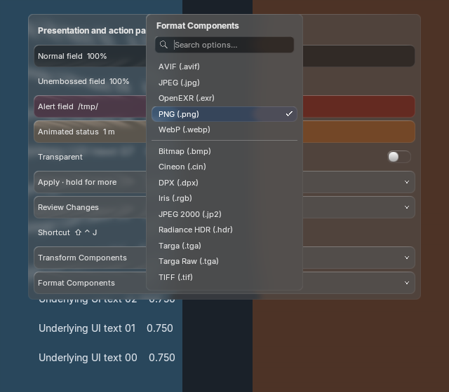
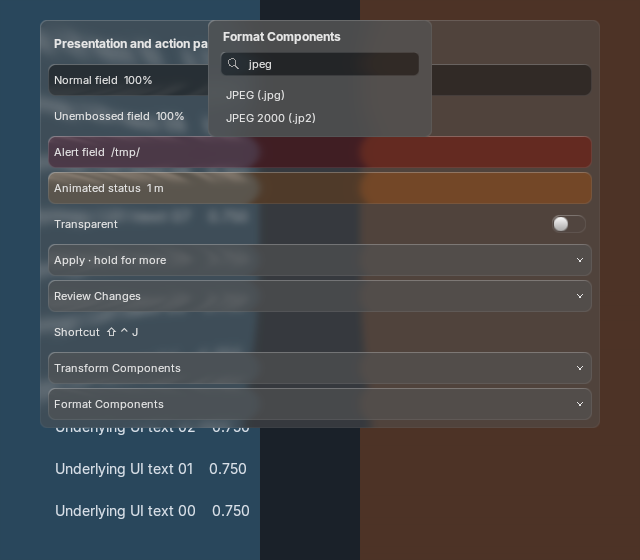
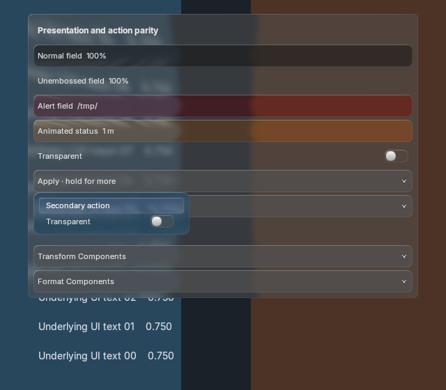
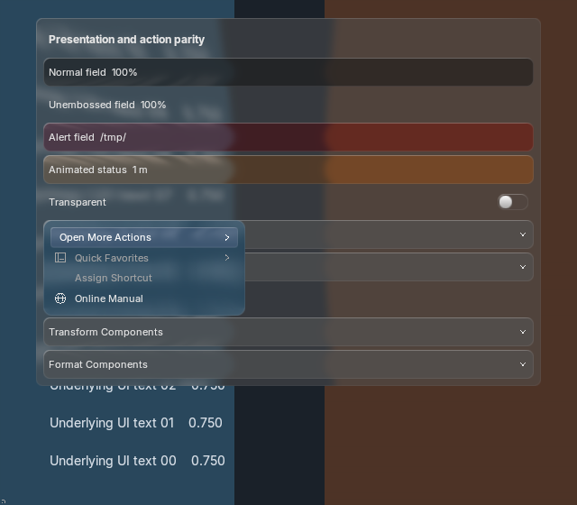
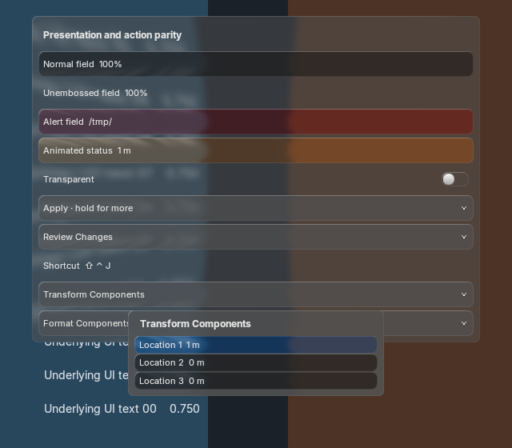

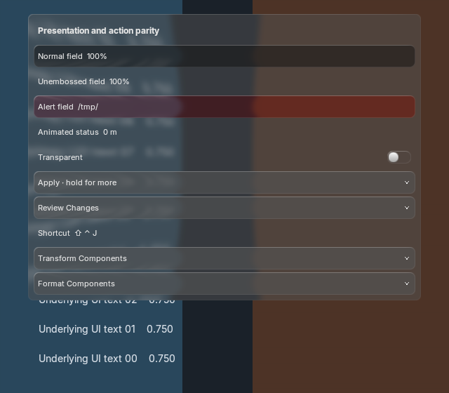
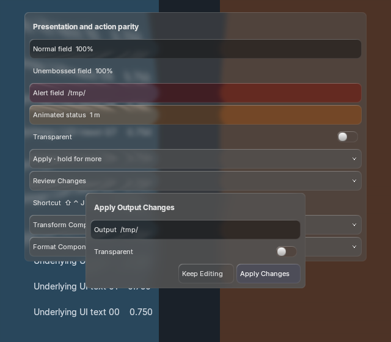
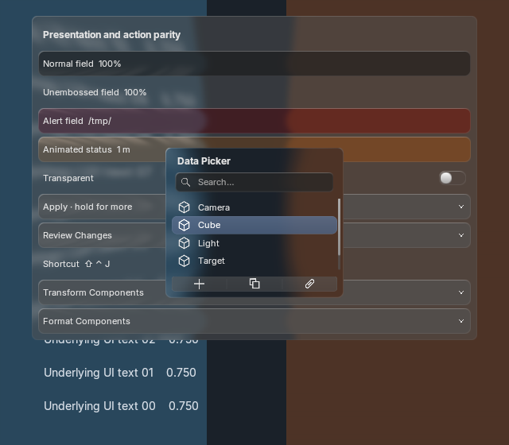
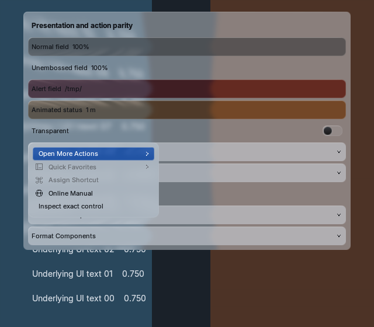
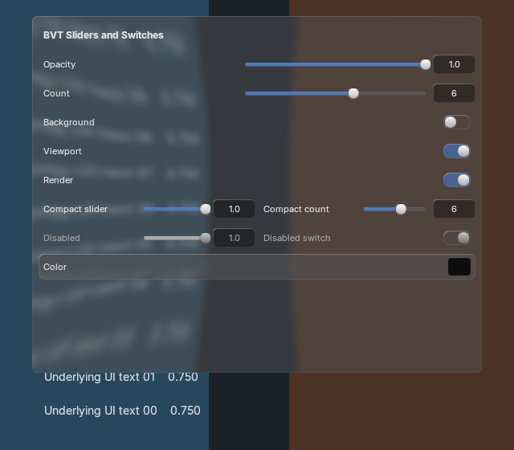
New v2: external labels/icons, centered buttons and search/highlight refinements. This v1 comparison is retained as history.
Fixed the popup host overwriting compact menu metrics. Shared spacing now covers enum, registered, nested/context menus and pointer/search pickers. Search magnifiers share text/caret insets with collection-list filters. Bold titles, darker inputs, larger switches, source glass and bounce remain in the renderer. Reference acceptance remains open. This is a fresh page; the previous core-review page is historical.
Overview and updated 2–7 turn estimate · Runtime, geometry, focus and source evidence · Immutable reference provenance
Equal menu width, same five labels, PNG selected and unfocused search. The reference's exterior margin is clipped only in this viewer. The implementation is a direct framebuffer crop, with no retouching. Backdrop, glyph and small spacing differences remain visible; this is not a pixel-exact acceptance claim.
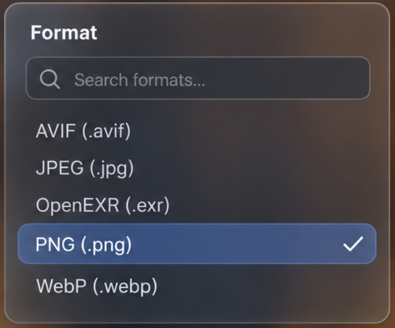
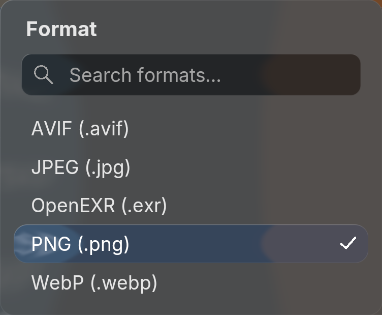












Check title size/weight, title→search and search→options gaps, text indent, highlighted row bounds, search icon, glass and light-theme contrast.